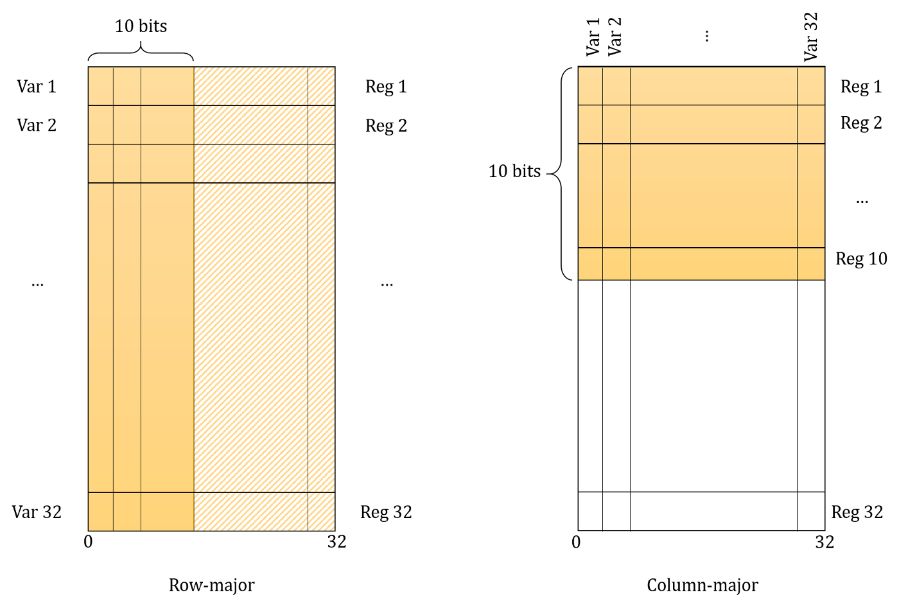
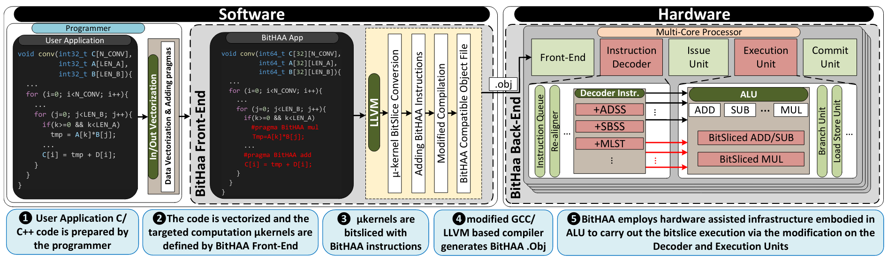

Research
For as long as I remember, I’ve always had a catch for developing ideas and finding innovative ways to solve existing problems. Until now, I’ve taken part in 3 different publications, explained below.
Fault Prediction in Competitive Programming Codes
There exists a lot of publications in which the authors tried to predict or analyze the faulty (buggy) areas in some projects. The scope of these fault-detectors were bounded to the modules. Our idea originally was to create a system capable of identifying and reporting the faulty areas of a program using the line-level features.
Of course focusing the live-level features in a project as a whole is really difficult and that was why we focused our attention to a specific type of programs. Those written in only one file. Since there was no dataset available at the time (or at least we didn’t find any), we were compelled to create our own dataset and that’s where we chose the programs submitted to the CodeForces website.
Our objective was to find faulty areas of a program and crawling every program in that website wouldn’t help at all. That’s why we only looked for programs which were Accepted by changing only a few lines. Yes! That was where the faults occurred.
The dataset was made up of pairs of programs, one program in each pair was the Wrong Answer and the other one was the Accepted version. Around 96,000 programs were gathered which each of their lines labeled as either “False” (where the line wasn’t faulty), and “True” (where the line was buggy).
Different features were then extract from the programs to build up the final dataset. Both semantical features and program-specific features (such as number of operands in each line) were considered.
Finally, different machine learning models were used to predict the faulty areas in different/new programs and the best model achieved 76% accuracy.
Scalable Kernel Load-Balancing for Parallel SPH Simulation
The Smoothed Particle Hydrodynamics is a method which tries to simulate the fluid flows and observe their behavior. Typically, a scenario is defined to help the simulation progress. One common scenario is called the “Dam Break” in which a fluid is kept behind a dam and released in order to start the simulation. Factors like fluid density, gravity, particle weight, etc control the simulation.
SPH is a “meshfree” method meaning no pre-defined connection is required between the particles. This is what makes Graphics Processing Units (GPUs) one of the best environments to run the simulation on since every particle can be mapped to a thread. Most of the researches at the time were focused on how to load-balance the simulation when ran on multiple GPUs and none (at least to our knowledge) focused on load-balancing in the thread-level. That’s what made our work unique.
The simulation procedure is mainly made from these steps:
- Each particle computes the total amount of force it is receiving (including gravity, forces from neighboring particles).
- Each particle then moves (based on a time step) towards the direction of the total force.
- After every particle is moved, new frame is present and the procedure repeats until either some number of frames is reached, or the total force done to each particle is 0.
The problem with high-level load-balancing was that most of the time, particles were much more dense in some areas than the others and this made the workload unequivalently distributed among the threads. Therefore, some threads were doing a lot of work (the ones with a lot of neighbors), some weren’t doing much work or even not at all. For example in the picture below, the blue particle is doing 4x work compared to the green particle.

Our proposed method focused on distributing the workload equivalently among all the threads at each step. We showed that the computation overhead occurring at each step is negligible compared to the achieved performance gain. We also showed the potential of this method as many multi-GPU simulation frameworks could benefit from this new method of load-balancing.
We evaluated our model on NVIDIA GeForce RTX 2080 Ti for a dam break scenario of 1M particles where we gained 73% performance improvement over the baseline (with dynamic load-balance).
BitHAA: Hardware Assisted Arithmetic Support For BitSlice Computation
First Introduced in 1997 (Article Link), BitSlicing is a technique whose purpose is to speed up computation through paralleled computation. The idea is instead of keeping M N-bit data in M registers (like we normally do), we create a register for each of those N bits. Therefore, we will have N M-bit registers. This image explains the concept:

This approach can work amazingly for some application like logical operations, or software implementation of the DES cipher (where Eli Bihem gained 5x speed up). But more complex operations such as addition or multiplication are not suited for this method. With the improvement of microprocessors, the BitSlicing idea was forgotten.
In this work, we offer a software-based SIMD model for the embedded CPUs. Our hardware-assisted framework provides a computation infrastructure for the BitSlice execution capable of executing single-bit SIMD operations. Our framework also supports arithmetic operations efficiently.
The BitHAA framework is composed of a front-end and a backend. In the front-end section, it provides a software API for user interface programming by utilizing LLVM and compile-time modifications of the input code. In its backend, BitHAA presents high-performance and efficient bit-serial arithmetic operations to be used in real-world applications.
We evaluated our framework on an open-source RISC-V processor and compared it to the state-of-the-art SIMD and SIMT platforms in the embedded systems. The results show that BitHAA is more efficient in area overload and power consumption, compared to the recent developments. The flow of BitHAA’s sub-system can be seen in the following image:

Specifically, my task was to develop various real-world applications using the BitHAA framework in order to showcase the performance increase that it provides. I developed the LeNet-5, RNN, and LSTM networks, the SHA-256 (cryptography), and the sobel edge detection (image processing) which gained 2.03x, 2.06x, and 3.99x performance increase respectively.
For each application, I first had to implement and make sure of its accuracy. Then, I had to specifically change my code for it to be used with the BitHAA framework. All codes were written in C++.